|
|
| cephalopods text index | photo index |
| Phylum Mollusca > Class Cephalopoda > squids and cuttlefishes |
| Bobtail
squids Suborder Sepiolida updated May 2020 Where seen? These rotund little squids are sometimes seen on our Northern shores on sandy areas among seagrass meadows. What are bobtail and bottletail squids? They are molluscs (Phylum Mollusca) like snails, slugs and clams; and cephalopods (Class Cephalopoda) which include octopuses. They belong to the Suborder Sepiolida. Bobtail squids belong to the Family Sepiolidae while Bottletail squids belong to the Family Sepiadariidae. Features: 2-4cm. These squids are generally rather spherical with a pair of rounded fins that make them look a little like an aquatic version of Dumbo the Flying Elephant! These squids can only be positively identified by examining the arm and suckers of the males. Females are difficult to identify. |
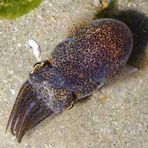 Changi, Jun 05 |
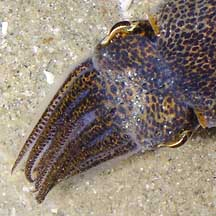 |
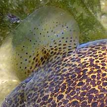 Pair of rounded fins. |
| Squids in this group tend to be found mostly on the sea bottom, generally
in sandy or muddy habitats where they lie buried during the day. They
use their broad fins to bury themselves, and use their funnel to blow
sand and arms to rake sand over their head. At night, they come out
to hunt. Some bobtail squids from the Family Sepiolidae have a rudimentary shell, many have light-emitting organs so that they glow in the dark. This actually camouflages them from bottom dwelling predators which look upwards for prey. The glowing body of a bobtail squid allows it to blend in a moonlit sky, instead of appearing as an obvious dark shadow. There are more than 50 species of bobtail squids found throughout the world from the Arctic sea to temperate and tropical waters. |
|
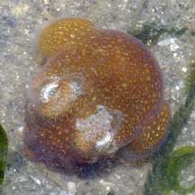 Changi, Nov 07 |
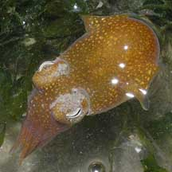 Changi, Nov 07 |
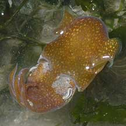 Changi, Nov 07 |
| Bottletail squids from the Family Sepiadariidae can produce slime from special glands on the underside of their body. They have kidney shaped (rather than circular) fins and lack light emitting organs. There are only about 8 described species of bottletail squids. |
*Species are difficult to positively identify without close examination. On this website, they are grouped by external features for convenience of display.
| Bobtail squids on Singapore shores |
On wildsingapore
flickr
|
| Other sightings on Singapore shores |
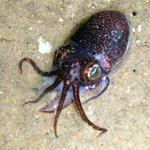 Pasir Ris Park, Nov 08 |
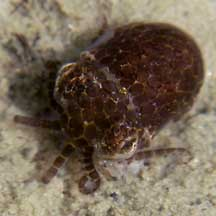 Chek Jawa, Jun 03 |
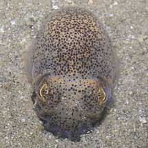 Changi, Jun 05 |
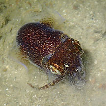 Beting Bronok, Jun 17 Photo shared by Toh Chay Hoon on facebook. |
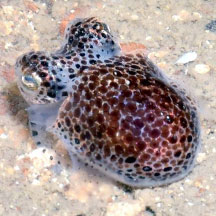 Beting Bronok, Jun 18 Photo shared by Loh Kok Sheng on facebook. |
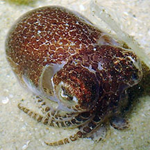 East Coast Park, Aug 20 Photo shared by Toh Chay Hoon on facebook. |
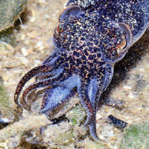 |
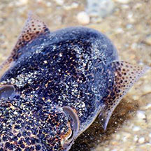 |
| Family
Sepiolidae recorded for Singapore from Tan Siong Kiat and Henrietta P. M. Woo, 2010 Preliminary Checklist of The Molluscs of Singapore.
|
|
Links
References
|